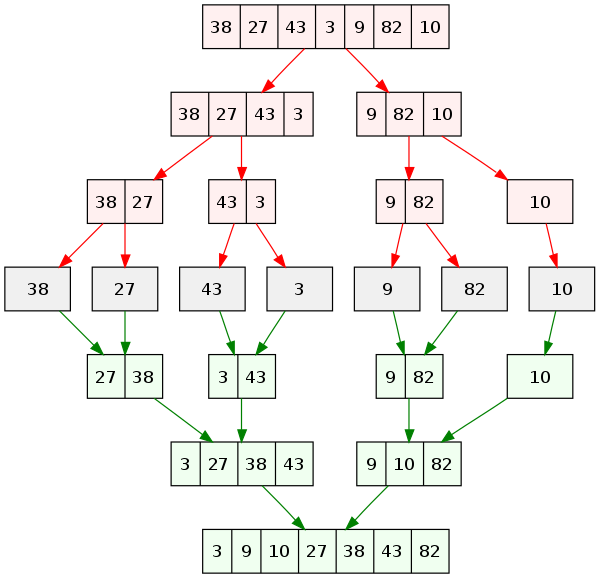

III. 정렬과 탐색
- Slow Sorting Algorithm
- Fast Sorting Algorithms
- Selection Algorithms
- Additional topics and Problems
- Programming Practice
우리의 목표는, $n$개의 원소를 가진 배열을 정렬하는 것입니다. 편의상, 다음과 같은 사실을 가정합니다.
-
정렬은 작은 것부터 큰 것 순서로 늘어놓는 것을 말합니다. ex) 1, 2, 3, 4, 5
-
$n$개의 원소에 대한 사전 정보는 전혀 없습니다.
-
$n$개의 원소는 모두 Random-access 가능한 형태로 저장되어 있습니다. 1
Slow Sorting Algorithm
자연스럽게, 정렬을 처음 생각하면 보통 $\order{n^2}$ 알고리즘을 생각하게 됩니다. 여기서는 비교적 간단하지만 유용한 Insertion sort 에 대해서만 알아보겠습니다. 한번 for loop을 실행할 때마다, 새 원소의 올바른 자리를 찾아 준다고 생각하면 됩니다.
int key, j;
for(int i = 1; i < size; i++) {
key = array[i];
j = i;
while(j > 0 && array[j-1]>key) {
array[j] = array[j-1];
j--;
}
array[j] = key;
}
이 알고리즘을 잘 살펴보면, 다음과 같은 사실들을 확인할 수 있습니다.2
-
Stable : 같은 원소 두 개, 즉 $x_1$ 과 $x_2$ 가 있을 때, 이 둘의 순서가 정렬 후에 바뀌지 않습니다. 이게 왜 필요하냐면, 이름 순으로 정렬된 사람의 목록을 나이 순으로 정렬한 다음에도, 같은 나이인 사람들끼리는 이름순으로 정렬되어 있음이 보장된다는 뜻입니다.
-
In-place : 추가적인 메모리를 거의 소모하지 않습니다. 정의에 따라 다르지만, $O(n)$ 보다 작은 추가 메모리를 소모한다는 의미로 받아들이기도 합니다.
-
Adaptive : 좋은 데이터가 주어지면, 그 성질을 활용해서 정렬을 더 빨리 끝낼 수 있습니다. 3
Fast Sorting Algorithms
Heap Sort
Heap 이라는 자료구조를 이용하는 정렬 방법으로, 나중에 Heap을 다룰 때 공부할 예정입니다.
Merge Sort
Merge sort (합병 정렬) 은 대표적인 Divide and Conquer 알고리즘입니다. 이 분할 정복 방법론 자체는 나중에 본격적으로 다루겠지만, 간단히 말하자면 다음과 같습니다.
-
큰 문제를 한 번 푸는 대신, 이를 작은 문제로 나누어서
-
각각의 작은 문제를 풀고
-
이 작은 문제의 결과들을 합치는 방법
앞서 공부한 Master theorem을 이용하여, 이러한 유형의 알고리즘들이 왜 더 빨라지는지, 어떻게, 얼만큼 더 빨라지는지 이해할 수 있습니다. 여기서 주목할 만한 점은 크게 두 가지입니다.
-
작은 문제로 나누어 풀고 합치는게 정말 더 빠른가?
-
작은 문제는 어떻게 푸는가?
1번 질문의 답은, Master theorem이나 이를 확장한 정리를 이용해 답하면 됩니다. 2번 질문은, 작은 문제가 큰 문제와 같지만 $n$만 작아진 버전이라는 사실에 주목하여, 더 작은 문제 로 나누어서 더 작은 문제를 풀고, .… 하면 됩니다. 간단히 말해서, 푸는 방법이 자명해질 때까지 문제를 줄이면 됩니다! 예를 들어, 정렬의 경우 배열의 원소가 2개 남으면, 자명하게 해결할 수 있습니다. 4 이제, Merge sort의 구체적인 방법을 생각해 봅시다.
-
배열을 두개로 나눕니다.
-
각각의 배열을 Merge sort 합니다.
-
정렬된 두 배열을 합칩니다.

시간 복잡도를 생각해 봅시다. $n$개의 원소를 가진 배열을 정렬하는데
$T(n)$ 의 시간이 걸린다면, 두개로 나누어 각각을 정렬하는데 한번에
$T(n/2)$ 씩 2번이 필요할 것입니다. 이제 정렬된 두 배열을 합치면 됩니다.
합치는 과정은, 두 배열이 이미 정렬되어 있음을 이용합니다. 두 배열 각각의
시작점을 표시하고, 더 작은 쪽을 챙기고, 챙긴 원소를 빼는 방법으로
생각하면 됩니다. 구현을 처음 해본다면 상당한 주의가 필요하지만,
$\Theta(n)$에 가능하다는 것은 쉽게 이해할 수 있을 것입니다.
따라서, $T(n) = 2T(n/2) + \Theta(n)$이고, 이를 마스터 정리로 풀면
$T(n) \in \Theta(n \log n)$ 을 얻습니다.
Quick sort
Quick sort는 비슷하게 Divide and Conquer 방식을 이용하는 알고리즘으로, 더 간단하게 설명할 수 있습니다. 다음 세 줄이면 충분합니다.
-
적당한 Pivot을 고릅니다.
-
Pivot보다 작은 원소는 왼쪽으로, 큰 원소는 오른쪽으로 보냅니다.
-
Pivot의 좌우에 대해 반복합니다.
이 과정을 반복하여 전체 배열을 정렬하는 방법입니다. 이 방법이 왜 Quick
이라고 불리냐면, 실제로 돌려보면 평균적으로 Merge나 다른 정렬보다 빠르기
때문입니다. 그러나 이 방법에는 치명적인 문제가 있습니다.
적당한 Pivot을 어떻게 고르느냐에 따라, 알고리즘의 성능이 크게
좌우됩니다. 이 알고리즘의 성능은, Pivot보다 작은 원소가 $k$개, 큰 원소가
$n-k-1$개라고 할 때, $T(n) = T(k)+T(n-k-1)+\Theta(n)$ 형태로 나타난다는
사실을 어렵지 않게 알 수 있습니다. 모든 지점에서 $k = 0$이라면, 즉 운이
매우 없어서 / 또는 데이터가 매우 불리하게 주어져서, 매번 가장 작은
원소가 Pivot에 걸린다면 수행 시간이 $\Theta(n^2)$가 됩니다. 이를 막기
위해서는, 비교적 중간값에 가까운 Pivot을 골라야 합니다. 그러나 이것은
필연적으로 Pivot 고르는 시간을 필요로 하게 됩니다. 크게 다음의 방법이
주로 쓰입니다.
-
Random : 배열의 임의의 원소를 씁니다.
-
Median-of-3 (9) : 3 (9)개를 임의로 뽑아 보고, 그중 중간값을 Pivot으로 씁니다.
Hybrid Sort
Quick sort는 $n$이 작을 때 상대적으로 느립니다. 반면, $O(n^2)$ Sorting algorithm들은 단순하기 때문에 $n$이 작으면 매우 빠릅니다. 그래서, Hybrid sort 라고 해서, Quick sort 같은 알고리즘을 쓰다가 원소의 개수가 적어지면 5 Insertion으로 마무리하는 알고리즘이 있고, 이것의 성능이 단순 Quick보다 훨씬 좋습니다.
Selection Algorithms
우리의 다음 목표는, $n$개의 원소 중 $k$번째로 큰 원소를 찾는 것입니다. 이것을 ‘selection’, 선택 문제라고 부르기로 합니다. 잠깐 생각해 보면, 정렬하고 나면, $\order{1}$ 에 선택 문제를 풀 수 있으므로, 선택 문제에 대한 알고리즘의 후보로 정렬을 쓸 수 있습니다. 다시 말해, 선택 알고리즘은 적어도 정렬보다는 쉬운 문제 (Computationally, 시간 복잡도가 같거나 더 작은 문제) 일 것이라는 생각을 할 수 있습니다. 구체적으로, 우리는 어떤 $k$에 대해서든, $\order{n}$에 해결하고 싶습니다. 가장 작은 원소, 가장 큰 원소 등은 $\order{n}$에 찾을 수 있음이 자명하기 때문입니다.
Quickselect
Quickselect algorithm은 Quicksort를 응용한 방법입니다. 먼저, Quicksort 알고리즘을 크게 다음과 같이 정리합시다.
-
Partition : pivot을 기준으로 좌우로 원소들을 분할하는 작업.
-
Recursive Quicksort $\times 2$
이제, 생각해 보면, Partition을 똑같이 해보고 나서, 왼쪽 또는 오른쪽 중에
어느 쪽에 우리가 원하는 $k$번째 원소가 있는지를 알 수 있습니다. 예를
들어, 10개의 원소가 3개-pivot-6개로 나누어져 있고, 우리가 7번째 작은
원소를 원한다면, 왼쪽은 버리고 오른쪽에 대해서만 재귀적으로 들어갑니다.
즉, 오른쪽 part에 대해 3번째로 작은 원소를 고르면 됩니다. (5, 6, 7, 8,
9, 10 중 3번째를 고른다는 의미)
이 방법은 정말 빠를까요? 얼마나 빠른지를 생각해 봅시다. 만약에, 한번
실행마다 절반씩 원소를 줄일 수 있다면 (최적의 Partition), $n$, $n/2$,
$n/4$ $\dots$ 에 대한 Partition만 하면 끝나므로, 이를 무한급수로
생각하면 $2n \in \order{n}$ 시간에 해결할 수 있습니다. 즉, Pivot을 잘
고르면 $\order{n}$ 시간에 해결할 수 있음을 의미합니다. 그러나, Quick
sort와 마찬가지로, Pivot을 계속 못 고르면 $n^2$ 시간이 걸릴 수도
있습니다. 이런 알고리즘에 어떤 의미가 있는지는 문제 iv 번을 참고하세요.
Worst-Case Linear Selection
우리의 목표에 있어서 별로 중요하지 않기 때문에, 매우 간단하게만 설명하겠습니다. 아이디어는 약간의 시간을 써서 Quickselect의 pivot이 나쁘지 않게 하는 것입니다. 6
-
전체 $n$ 크기의 배열을, $n/5$개의 5개짜리 배열로 나눕니다.
-
5개짜리 배열 각각의 중간값을 찾습니다.
-
$n/5$개의 수들 중, 중간값을 재귀적으로 구합니다.
-
이제, 이 수를 $M$이라고 합시다. 이 수는 중간값들의 중간값입니다.
-
이 $M$을 pivot으로, Partition합니다.
이 방법이 정말 빠를까요? (Additional 5 참고)
Additional topics and Problems
-
(Almost-Sorted) Insertion sort의 Adaptive한 성질을 더 생각해 봅시다. 구체적으로, $n$개의 원소를 가진 배열에서, 각 원소가 sorting된 자리에서 $k$ 자리 이상 벗어나 있지 않음이 보장되어 있다고 가정하고, Insertion sort가 $O(nk)$에 정렬을 완료함을 보이세요.
-
STL의 sort가 어떻게 구현되어 있는지 찾아보세요.
-
(Tip) C++ sort의 comparator란, 두 원소의 크고 작음을 비교하는 기준을 제공하면 이를 기준으로 정렬해 준다는 의미입니다. 예를 들어, 두 String을 길이를 기준으로 정렬할 수 있습니다. 유용하니 반드시 익히길 권합니다. Comparator는 (이산수학을 수강했다면) strict partial order여야 합니다.
-
다음 조건 하에서, 흐름을 따라가며 Quick sort의 시간 복잡도가 average $O(n \log n)$ 임을 보이세요.
-
입력은 임의의 중복 없는 수열.
-
즉, 위 설명에서, $k$가 0부터 $n-1$까지의 임의의 수일 확률이 모두 일정하다.
이때, Average의 개념을 생각하면, $T(n)$ 에 대한 평균은 \(T(n) = \frac{1}{n}\left(\sum_{k = 0}^{n-1} T(k)+T(n-k-1)\right) + \Theta(n)\) 이 식을 어떻게 계산할지 생각해 보세요. 다양한 방법이 있습니다.
거의 비슷한데, Quick select 알고리즘의 평균 시간 복잡도가 $O(n)$ 임을 보이세요. 다시 말해, \(T(n) = \frac{1}{n} \left(\sum_{k = 0}^{n-1} \max\{T(k), T(n-k-1)\}\right) + \Theta(n)\) 이 식을 계산해 보세요.
힌트 : $T(n) \in O(f(n))$ 을 증명하는 방법으로, 수학적 귀납법을 생각해 보세요. $n$보다 작은 $m$에 대해, $T(m) \leq cf(m)$ 인 상수 $c$가 존재한다고 가정하고 $n$에 대해서도 성립함을 보입니다. -
-
Quick sort에서 각 과정에서 항상 좌우의 배열 크기가 1:9로 나누어진다고 가정하고, 시간 복잡도를 계산해 보세요. 1:99, 1:999에 대해서도 생각해 보세요.
-
(제약의 중요성) 맨 앞 장으로 돌아가, 가정을 보세요. 모든 수가 -100만부터 +100만까지라는 사실이 주어져 있을때, $n$개의 수가 주어질 때 $O(n)$에 정렬할 수 있는 방법을 제시하세요.
힌트 : 이 방법을 Counting Sort 라고 부릅니다.
-
앞서 제시한 Linear-Time Selection 알고리즘이 정말 Linear-time selection을 보장함을 보이세요.
-
(Sorting Lower Bound) Decision tree에 대해 찾아보고, Worst case에 $O(n \log n)$ 보다 좋은 비교 기반의 정렬 알고리즘이 없음을 납득하세요. 이를 Sorting lower bound라고 부릅니다. (6번에서 다룬 Counting sort는 비교 기반 정렬이 아니므로 (< 연산의 결과를 쓰지 않습니다) 이 내용과 상관 없습니다)
Programming Practice
-
STL의 도움을 전혀 받지 말고 (필요하다면 벡터 정도까지는 써도 됩니다) 편한 방법대로 quick sort와 merge sort를 구현해 보세요. Baekjoon OJ의 2751번에 제출해서 구현을 확인해 보세요.
-
Quickselect를 구현해서 Baekjoon OJ의 11004번에 제출하고, 시간 초과를 받았다면 개선해 보세요. 7 Worst case linear selection을 구현해 보세요.
-
BOJ 11650, 11651을 통해 STL의 sort 함수 사용법을 익히세요.
-
Small exercise) Asymptotic analysis를 이용하여, 이 가정이 불필요함을 보이세요. ↩
-
직접 확인해 보세요. ↩
-
Additional 의 i 를 참고하세요 ↩
-
한 줄로, 한번에 풀 수 있을 때까지 나누면 된다고 생각하기 쉽습니다. 사실은, 충분히 빨리 풀 수 있는 방법이 있다면 굳이 그럴 필요는 없습니다. ↩
-
Typically, 8, 16, 32, 64 정도 값을 택합니다. ↩
-
목표는 좋게 가 아니라 나쁘지 않게. (Additional 5) 참고. ↩
-
항상 Worst case에 대비하는 mind를 준비하세요! ㅋㅋ ↩